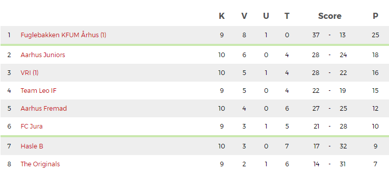

OPRYKNINGSVISIONER I SIGTE FOR FUGLEBAKKEN

God Udsigt
Det har længe været målet for fuglebakkens næstbedste hold, at rykke op fra serie 3 til serie 2. Dog har det sidste held altid manglet, for dette mål at blive til realitet. I denne sæson ser det dog meget lovende ud. ”Fuglebakkens drenge” som der bliver sunget i omklædningsrummene efter en sejr, ligger lige nu suverænt nummer 1, med 7 point ned til 2. pladsen og med en kamp til gode i forhold til de tætteste konkurrenter.

Magtdemonstration Under Hjemmekamp
At det kører for Fuglebakken kunne også ses i gårsdagens kamp mod FC Jura, hvor de rød-sort-stribede vandt med hele 10-2, og dermed er ubesejret i alle 9 kampe som indtil videre er blevet spillet. Cheftræner Thomas Nees har følgende at sige om kampen: ” Kampen skulle afvikles på en rigtig svær og våd bane på Højlyngen. Efterårets regnfulde vejr har været hård ved banen, hvilket de fremmødte tilskuere sagtens kunne se. Gameplanen var derfor at spille primitiv fodbold, da det ville blive rigtig sværtat spille fodbold på banen. Planen lykkes til punkt og prikke, og spillerne skal have kæmpe ros for at holde fast i taktikken i alle 90min.” Spillerne forbereder sig allerede nu på den næste kamp, hvor drengene igen skal vise sig frem, og opretholde den gode sejrsstime.
En Klub I Udvikling
En af grundene til succesen kunne være det enorme antal af nye spillere som er kommet til klubben. Fordelt på fuglebakkens tre hold, er der lige nu samlet omkring 100 spillere, hvor 20 af disse alle lige er ankommet til klubben. En anden grund kunne være den øgede indbyrdes konkurrence mellem spillerne. Alle er nødt til at være 100% klar både fysisk og mentalt til hver eneste træning, for at blive udtaget til kampe.
Vigtigt at blive på jorden
Selvom det kører som det skal for fuglebakkens næstbedste hold, er det vigtigt at bevare roen. ”vi tager én kamp af gangen, og det vil vi blive ved med” Sådan Cheftræner Thomas Nees om succesen. Der blev efter kampen sunget den sædvanlige sejrssang "Vi Er Fuglebakkens Drenge":